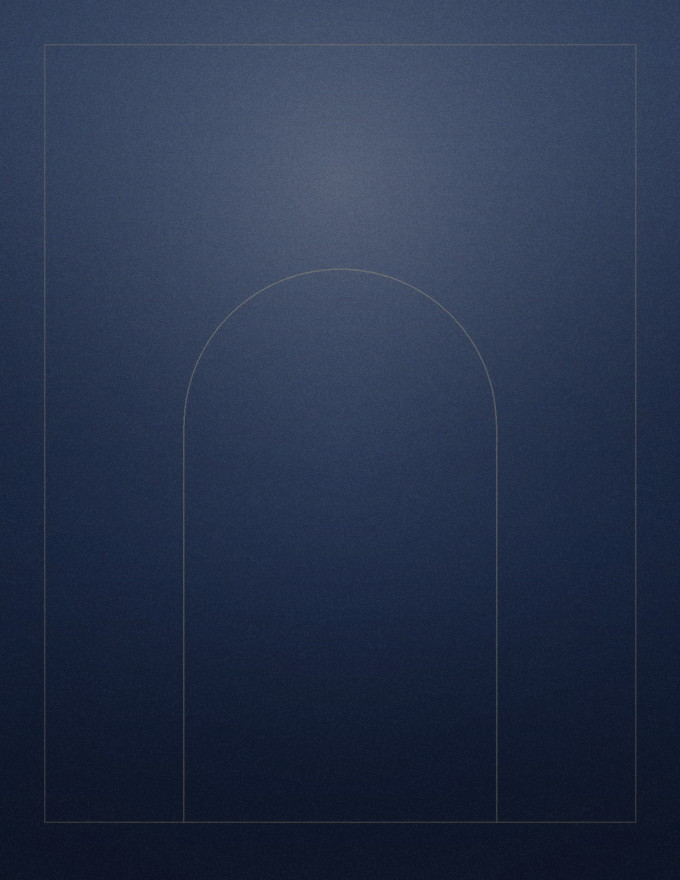

Construí instituciones a ambos lados del Atlántico. Hoy las gobierno, escribo sobre quienes las hicieron y acompaño a quienes las harán.
Educación, deporte y cultura: los tres lenguajes que unen a las personas más allá de los intereses.

Creo profundamente en el ser humano. Creo que cada persona lleva dentro sus respuestas, su vocación y su propia voz, y que lo que necesita es un espacio donde escucharse con mayor claridad.
Las instituciones valen lo que vale su gente. Cuando una persona crece con criterio, propósito y confianza, crecen también las empresas, las familias y la sociedad. He comprobado esta verdad en cuatro países, en tres idiomas y en mundos muy distintos entre sí: funciona en una escuela de negocios y funciona en un vestuario; funciona en un consejo de administración y funciona en una sobremesa familiar donde la siguiente generación sueña con estar a la altura.
Porque muchas veces, una sola conversación puede cambiar el rumbo de una vida.
Construye instituciones y forma personas.
Soy Fabeka Lebrón Pereyra. Soy dominicana, iberoamericana y ciudadana de dos continentes. Mi vida ha transcurrido entre Santo Domingo, Barcelona, Madrid y São Paulo, y en ese ir y venir descubrí mi verdadera vocación: soy una mujer puente.
He sido rectora, empresaria y consejera delegada de proyectos deportivos internacionales, y cada uno de esos mundos me enseñó el idioma de los otros. Por eso pienso en plataformas y pienso en décadas. Mi unidad de medida es la institución que sobrevive a quien la funda.
Pienso desde la estrategia y decido desde los valores. Creo en el largo plazo, en la elegancia de los procesos bien hechos, en la palabra dada y en la belleza como forma de respeto: hacia el trabajo, hacia las personas y hacia una misma.
Esta etapa la dedico a gobernar, a escribir y a acompañar. Escribo memorias profesionales: la vida y la obra de quienes han construido empresa, deporte e instituciones, para que el mundo los vea. Y acompaño, durante un año y de una en una, a personas que están decidiendo el rumbo de su trayectoria y de su vida. Tres verbos y una misma vocación: hacer visible el valor de las personas que construyen.
Cinco expresiones, una sola obra. En todas hago lo mismo que he hecho siempre: crear espacios donde las personas y las instituciones pueden crecer.
Iberoamerican Bridges, unidad de Keicher Group, es mi casa profesional: diplomacia económica y articulación institucional. Alianzas entre gobiernos, empresas, universidades y organizaciones internacionales a ambos lados del Atlántico.
El consejo es el lugar natural de esta etapa: allí donde la experiencia se convierte en gobernanza. Sirvo en consejos donde la educación, el deporte, la cultura o Iberoamérica forman parte de la ecuación.
Respaldo desde su origen el IESE Sports Management Center, entre los founding partners que el IESE reconoce como visionarios: una plataforma donde ejecutivos, emprendedores, inversores, deportistas, organismos rectores, estudiantes y académicos dialogan, generan conocimiento y dan forma al futuro del deporte, con la aspiración de ser referencia global en excelencia, profesionalización y liderazgo responsable en la industria del deporte.
En la Real Academia Europea de Doctores impulso el diálogo intelectual entre Europa e Iberoamérica y convoco el Congreso Internacional RAED · Retos Vitales, plataforma de pensamiento estratégico con edición inaugural en Santo Domingo.
Un año, una persona. Acompaño a jóvenes profesionales, a la siguiente generación de las empresas familiares, a mujeres líderes y a emprendedores con propósito en la construcción de trayectorias con criterio, confianza y visión internacional.
Instituciones que perduran.
La primera universidad especializada en negocios del país. En paralelo, trajo a República Dominicana el primer Advanced Management Program del IESE.
Impulsó la creación del primer club formador del FC Barcelona fuera de España: un referente técnico, educativo e institucional para América Latina.
Partner oficial del FC Barcelona en República Dominicana y creación de la Barça Academy Copa Las Américas, ecosistema formativo continental.
Sede oficial para América del torneo juvenil de referencia mundial: deporte, turismo y diplomacia económica al servicio de la Marca País.
Quiero que cada persona que termine una conversación conmigo se marche con una profunda sensación de serenidad, claridad y confianza. Que vuelva a creer en sí misma. Que descubra que sus sueños pueden transformarse en proyectos reales cuando nacen de su propósito, de sus valores y de su propia voz.
«Entiendo el liderazgo como la capacidad de crear las condiciones para que otras personas puedan crecer.»
«La vida se parece al deporte: enseña a levantarse, y cada experiencia fortalece el carácter cuando somos capaces de aprender de ella.»
«Cuando una persona desarrolla criterio, valores, visión y excelencia, la prosperidad llega como consecuencia del valor que aporta al mundo.»